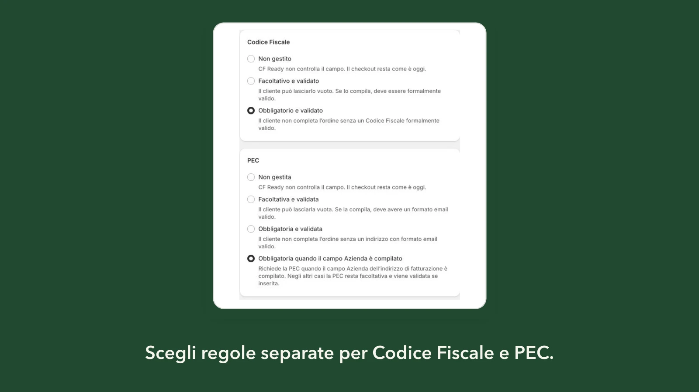

Il campo PEC nativo
La PEC usa uno dei campi fiscali nativi di Shopify, distinto dall’email dell’ordine e dal Codice Fiscale. È Shopify a decidere quando mostrarlo nel checkout: CF Ready non lo crea, non lo aggiunge al tema e non riutilizza “Interno”. Nella configurazione standard il campo è facoltativo, e il cliente può completare l’ordine lasciandolo vuoto.
CF Ready aggiunge una regola sopra questo campo, eseguita dalla Validation di Shopify durante il checkout. La regola della PEC è indipendente da quella del Codice Fiscale.
Quattro stati per la PEC
Nella pagina Regole checkout dell’app scegli uno di questi stati:
- Non gestita: CF Ready non controlla il campo e il checkout resta come è oggi.
- Facoltativa e validata: il cliente può lasciarla vuota; se la compila, deve avere la forma di un indirizzo email valido.
- Obbligatoria e validata: il cliente non completa l’ordine senza un indirizzo in forma valida.
- Obbligatoria quando il campo Azienda è compilato: la PEC serve solo a chi indica un’azienda nell’indirizzo di fatturazione.
Il Codice Fiscale ha i primi tre stati. Puoi combinarli come preferisci: per esempio Codice Fiscale obbligatorio per tutti e PEC richiesta solo alle aziende.

Come funziona la PEC obbligatoria con il campo Azienda
CF Ready legge il campo Azienda dell’indirizzo di fatturazione e ignora gli spazi iniziali e finali. Se resta del testo, la PEC diventa obbligatoria: un campo vuoto blocca la conferma dell’ordine con il messaggio che hai scelto. Se Azienda è vuoto, la PEC resta facoltativa.
In entrambi i casi una PEC compilata viene sempre controllata nella forma. Valgono anche le regole generali: il controllo riguarda le consegne in Italia e non si applica quando l’indirizzo di fatturazione è estero.
Se il cliente non vede o non compila Azienda nell’indirizzo di fatturazione, la PEC resta facoltativa. Prima di attivare la regola, completa un checkout di prova e verifica dove compare il campo Azienda nel tuo store.
CF Ready non deduce il trattamento fiscale dell’ordine dal campo Azienda. Usa quel campo solo come segnale per chiedere la PEC. Se e quando raccoglierla lo decidi tu con il tuo commercialista.
Cosa controlla CF Ready sulla PEC
Il controllo è formale. CF Ready verifica che l’indirizzo abbia una sola chiocciola, una parte locale e un dominio non vuoti, nessuno spazio interno e un dominio scritto in modo corretto, sottodomini compresi. Maiuscole e minuscole sono accettate.
Quando il valore non va bene, il cliente vede il tuo messaggio seguito da una breve frase che spiega la causa formale, così corregge senza andare per tentativi.
CF Ready non interroga il dominio, non usa elenchi di gestori PEC e non verifica che la casella esista. Un indirizzo scritto bene non è detto sia una PEC davvero attiva.
Cosa resta fuori
CF Ready gestisce solo Codice Fiscale e PEC. Non gestisce Partita IVA o Codice Destinatario, non emette fatture e non le invia allo SDI. Se ti servono questi dati, valuta gli strumenti di fatturazione che usi già.
Come attivare la PEC obbligatoria per le aziende
- Apri Regole checkout e scegli lo stato della PEC.
- Scegli separatamente lo stato del Codice Fiscale.
- Prova nel simulatore il caso “Azienda compilata senza PEC” e una PEC scritta male.
- Salva le regole, poi attiva la Validation: sono due azioni separate.
- Completa un checkout di prova con e senza Azienda.
Dopo l’ordine trovi la PEC insieme al Codice Fiscale nella pagina dei dettagli dell’ordine. Se vuoi indirizzi uniformi, l’app può salvarla in minuscolo negli ordini.
Domande frequenti
Con questa regola la PEC diventa obbligatoria per tutti i clienti?
No. Con lo stato «Obbligatoria quando il campo Azienda è compilato», la PEC è richiesta solo se il cliente compila Azienda nell’indirizzo di fatturazione. Negli altri casi resta facoltativa e viene controllata se inserita.
CF Ready verifica che la casella PEC esista?
No. Controlla che l’indirizzo sia scritto in una forma valida. Non interroga il dominio, non usa elenchi di gestori PEC e non attesta che la casella sia attiva o iscritta come PEC.
Posso richiedere la PEC senza richiedere il Codice Fiscale?
Sì. Codice Fiscale e PEC hanno regole indipendenti: puoi lasciare il Codice Fiscale non gestito o facoltativo e richiedere la PEC, o il contrario.
La PEC è obbligatoria anche con fatturazione estera?
No. Con un indirizzo di fatturazione estero CF Ready non applica regole, anche se il campo Azienda è compilato e la consegna è in Italia.